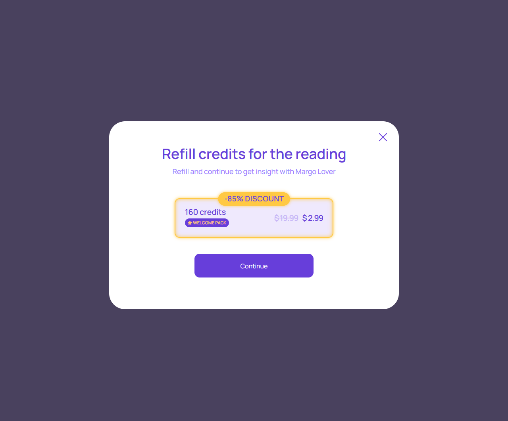

Скидочное предложение
account/discounted-refill-offer.html
Предложить один доступный пакет на явных условиях.
| Когда открывается | Подтвержденная доступная акция |
|---|---|
| Данные | offerId; package; скидка; цена; срок; eligibility. |
| Сценарий | Continue фиксирует условия и открывает проверку заказа; Close не покупает. |
| Переходы | Проверка заказа |
Нельзя показывать бесконечную или вымышленную персональную скидку.
Общая и предметная логика. Снимки и подписи элементов — исходная редакция макета; поздние уточнения ТЗ имеют приоритет в своей области. Это не проверка текущего сайта.
Состояние 1280 · 1280 × 1062


Элементы и ожидаемые действия
| Элемент | Название в макете | Действие | Ожидаемый результат |
|---|---|---|---|
| E001 Скрыт в этом состоянии | Discounted refill offer status | Информационный блок/область фокуса, не самостоятельная команда. | Показывать актуальные данные соответствующего сценария; фокус или чтение не выполняют мутацию. |
| E002 Виден | Close discounted refill offer | Закрыть локальное окно или вернуться к инициатору; Stay отменяет намерение завершить. | Вернуть фокус и исходный контекст. Не выполнять оплату, удаление или Complete. При неизвестном результате платежа сначала сверить заказ. |
| E003 Виден | Continue | Подтвердить текущий пакет/заказ по сценарию «Скидочное предложение». | Одна попытка платежа; pending/success/failure различаются. Success только по серверу. Пополнение не запускает консультацию. |
Состояние 390 · 390 × 1062

Элементы и ожидаемые действия
| Элемент | Название в макете | Действие | Ожидаемый результат |
|---|---|---|---|
| E001 Скрыт в этом состоянии | Discounted refill offer status | Информационный блок/область фокуса, не самостоятельная команда. | Показывать актуальные данные соответствующего сценария; фокус или чтение не выполняют мутацию. |
| E002 Виден | Close discounted refill offer | Закрыть локальное окно или вернуться к инициатору; Stay отменяет намерение завершить. | Вернуть фокус и исходный контекст. Не выполнять оплату, удаление или Complete. При неизвестном результате платежа сначала сверить заказ. |
| E003 Виден | Continue | Подтвердить текущий пакет/заказ по сценарию «Скидочное предложение». | Одна попытка платежа; pending/success/failure различаются. Success только по серверу. Пополнение не запускает консультацию. |